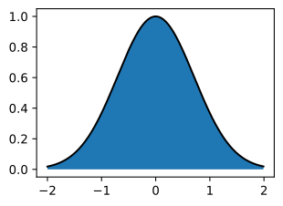
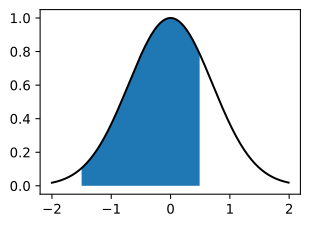
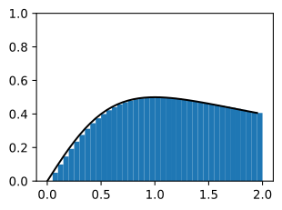
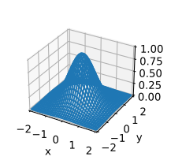
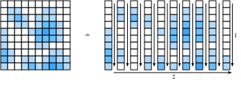

Giải tích tích phân¶
Vi phân chỉ chiếm một nửa nội dung của giáo dục giải tích truyền thống. Trụ cột còn lại, tích phân, ban đầu có vẻ là một câu hỏi khá rời rạc: "Diện tích bên dưới đường cong này là bao nhiêu?" Dù có vẻ không liên quan, tích phân gắn bó chặt chẽ với vi phân thông qua điều được gọi là định lý cơ bản của giải tích.
Ở mức học máy mà chúng ta thảo luận trong cuốn sách này, ta sẽ không cần hiểu quá sâu về tích phân. Tuy nhiên, chúng ta sẽ cung cấp một phần giới thiệu ngắn để đặt nền tảng cho các ứng dụng tiếp theo sẽ gặp sau này.
Diễn giải hình học¶
Giả sử ta có một hàm \(f(x)\). Để đơn giản, hãy giả sử \(f(x)\) không âm (không bao giờ nhận giá trị nhỏ hơn không). Điều ta muốn cố hiểu là: diện tích nằm giữa \(f(x)\) và trục \(x\) là bao nhiêu?
#@tab mxnet
%matplotlib inline
from d2l import mxnet as d2l
from IPython import display
from mpl_toolkits import mplot3d
from mxnet import np, npx
npx.set_np()
x = np.arange(-2, 2, 0.01)
f = np.exp(-x**2)
d2l.set_figsize()
d2l.plt.plot(x, f, color='black')
d2l.plt.fill_between(x.tolist(), f.tolist())
d2l.plt.show()

#@tab pytorch
%matplotlib inline
from d2l import torch as d2l
from IPython import display
from mpl_toolkits import mplot3d
import torch
x = torch.arange(-2, 2, 0.01)
f = torch.exp(-x**2)
d2l.set_figsize()
d2l.plt.plot(x, f, color='black')
d2l.plt.fill_between(x.tolist(), f.tolist())
d2l.plt.show()

#@tab tensorflow
%matplotlib inline
from d2l import tensorflow as d2l
from IPython import display
from mpl_toolkits import mplot3d
import tensorflow as tf
x = tf.range(-2, 2, 0.01)
f = tf.exp(-x**2)
d2l.set_figsize()
d2l.plt.plot(x, f, color='black')
d2l.plt.fill_between(x.numpy(), f.numpy())
d2l.plt.show()

Trong hầu hết trường hợp, diện tích này sẽ vô hạn hoặc không xác định (hãy xét diện tích dưới \(f(x) = x^{2}\)), nên người ta thường nói về diện tích giữa một cặp điểm biên, chẳng hạn \(a\) và \(b\).
#@tab mxnet
x = np.arange(-2, 2, 0.01)
f = np.exp(-x**2)
d2l.set_figsize()
d2l.plt.plot(x, f, color='black')
d2l.plt.fill_between(x.tolist()[50:250], f.tolist()[50:250])
d2l.plt.show()

#@tab pytorch
x = torch.arange(-2, 2, 0.01)
f = torch.exp(-x**2)
d2l.set_figsize()
d2l.plt.plot(x, f, color='black')
d2l.plt.fill_between(x.tolist()[50:250], f.tolist()[50:250])
d2l.plt.show()
#@tab tensorflow
x = tf.range(-2, 2, 0.01)
f = tf.exp(-x**2)
d2l.set_figsize()
d2l.plt.plot(x, f, color='black')
d2l.plt.fill_between(x.numpy()[50:250], f.numpy()[50:250])
d2l.plt.show()
Ta sẽ ký hiệu diện tích này bằng ký hiệu tích phân dưới đây:
Biến bên trong là một biến giả, giống như chỉ số của một tổng trong \(\sum\), nên điều này có thể được viết tương đương với bất kỳ giá trị bên trong nào ta muốn:
Có một cách truyền thống để cố hiểu cách ta có thể xấp xỉ các tích phân như vậy: ta có thể tưởng tượng lấy vùng giữa \(a\) và \(b\) rồi cắt nó thành \(N\) lát dọc. Nếu \(N\) lớn, ta có thể xấp xỉ diện tích mỗi lát bằng một hình chữ nhật, rồi cộng các diện tích để thu được tổng diện tích dưới đường cong. Hãy xem một ví dụ làm điều này trong mã. Ta sẽ thấy cách lấy giá trị thật trong một phần sau.
#@tab mxnet
epsilon = 0.05
a = 0
b = 2
x = np.arange(a, b, epsilon)
f = x / (1 + x**2)
approx = np.sum(epsilon*f)
true = np.log(2) / 2
d2l.set_figsize()
d2l.plt.bar(x.asnumpy(), f.asnumpy(), width=epsilon, align='edge')
d2l.plt.plot(x, f, color='black')
d2l.plt.ylim([0, 1])
d2l.plt.show()
f'approximation: {approx}, truth: {true}'
#@tab pytorch
epsilon = 0.05
a = 0
b = 2
x = torch.arange(a, b, epsilon)
f = x / (1 + x**2)
approx = torch.sum(epsilon*f)
true = torch.log(torch.tensor([5.])) / 2
d2l.set_figsize()
d2l.plt.bar(x, f, width=epsilon, align='edge')
d2l.plt.plot(x, f, color='black')
d2l.plt.ylim([0, 1])
d2l.plt.show()
f'approximation: {approx}, truth: {true}'
#@tab tensorflow
epsilon = 0.05
a = 0
b = 2
x = tf.range(a, b, epsilon)
f = x / (1 + x**2)
approx = tf.reduce_sum(epsilon*f)
true = tf.math.log(tf.constant([5.])) / 2
d2l.set_figsize()
d2l.plt.bar(x, f, width=epsilon, align='edge')
d2l.plt.plot(x, f, color='black')
d2l.plt.ylim([0, 1])
d2l.plt.show()
f'approximation: {approx}, truth: {true}'
Vấn đề là dù có thể làm bằng số, ta chỉ có thể thực hiện cách tiếp cận này bằng giải tích cho các hàm đơn giản nhất như
Bất kỳ thứ gì phức tạp hơn một chút, như ví dụ trong mã ở trên
đều vượt quá những gì ta có thể giải bằng một phương pháp trực tiếp như vậy.
Thay vào đó, ta sẽ dùng một cách tiếp cận khác. Ta sẽ làm việc trực giác với khái niệm diện tích, và học công cụ tính toán chính dùng để tìm tích phân: định lý cơ bản của giải tích. Đây sẽ là nền tảng cho nghiên cứu của ta về tích phân.
Định lý cơ bản của giải tích¶
Để đi sâu hơn vào lý thuyết tích phân, hãy giới thiệu một hàm
Hàm này đo diện tích giữa \(0\) và \(x\) tùy theo cách ta thay đổi \(x\). Lưu ý rằng đây là tất cả những gì ta cần vì
Đây là một mã hóa toán học của sự thật rằng ta có thể đo diện tích tới điểm biên xa rồi trừ đi diện tích tới điểm biên gần, như chỉ ra trong fig_area-subtract.
Vì vậy, ta có thể xác định tích phân trên bất kỳ khoảng nào bằng cách tìm \(F(x)\).
Để làm điều đó, hãy xét một thí nghiệm. Như thường làm trong giải tích, hãy tưởng tượng điều gì xảy ra khi ta dịch giá trị đi một chút rất nhỏ. Từ nhận xét ở trên, ta biết rằng
Điều này cho ta biết hàm thay đổi bằng diện tích dưới một lát rất mỏng của hàm.
Đây là điểm mà ta thực hiện một xấp xỉ. Nếu nhìn vào một lát diện tích mỏng như vậy, nó trông gần với diện tích hình chữ nhật có chiều cao là giá trị \(f(x)\) và chiều rộng đáy là \(\epsilon\). Thật vậy, có thể chỉ ra rằng khi \(\epsilon \rightarrow 0\), xấp xỉ này ngày càng tốt hơn. Do đó ta có thể kết luận:
Tuy nhiên, bây giờ ta có thể nhận thấy: đây chính xác là mẫu mà ta kỳ vọng nếu đang tính đạo hàm của \(F\)! Do đó ta thấy sự thật khá bất ngờ sau:
Đây là định lý cơ bản của giải tích. Ta có thể viết nó ở dạng mở rộng là $\(\frac{d}{dx}\int_0^x f(y) \; dy = f(x).\)$
Nó lấy khái niệm tìm diện tích (vốn tiên nghiệm khá khó) và rút gọn nó thành một phát biểu về đạo hàm (thứ đã được hiểu đầy đủ hơn nhiều). Một nhận xét cuối cùng cần đưa ra là điều này không cho ta biết chính xác \(F(x)\) là gì. Thật vậy, \(F(x) + C\) với bất kỳ \(C\) nào cũng có cùng đạo hàm. Đây là một sự thật cố hữu trong lý thuyết tích phân. May mắn thay, lưu ý rằng khi làm việc với tích phân xác định, các hằng số triệt tiêu, và do đó không liên quan tới kết quả.
Điều này có thể trông như một điều trừu tượng vô nghĩa, nhưng hãy dành chút thời gian để đánh giá rằng nó đã cho ta một góc nhìn hoàn toàn mới về việc tính tích phân. Mục tiêu của ta không còn là thực hiện một quy trình cắt-và-cộng nào đó để cố khôi phục diện tích, mà chỉ cần tìm một hàm có đạo hàm là hàm ta đang có! Điều này rất đáng kinh ngạc vì bây giờ ta có thể liệt kê nhiều tích phân khá khó chỉ bằng cách đảo ngược bảng từ sec_derivative_table. Chẳng hạn, ta biết đạo hàm của \(x^{n}\) là \(nx^{n-1}\). Vì vậy, dùng định lý cơ bản :eqref:eq_ftc, ta có thể nói rằng
Tương tự, ta biết đạo hàm của \(e^{x}\) là chính nó, nên điều đó có nghĩa là
Theo cách này, ta có thể phát triển toàn bộ lý thuyết tích phân bằng cách tự do tận dụng các ý tưởng từ giải tích vi phân. Mọi quy tắc tích phân đều suy ra từ một sự thật này.
Đổi biến¶
Cũng như với vi phân, có một số quy tắc giúp việc tính tích phân dễ xử lý hơn. Thật ra, mọi quy tắc của giải tích vi phân (như quy tắc tích, quy tắc tổng và quy tắc dây chuyền) đều có quy tắc tương ứng trong giải tích tích phân (tích phân từng phần, tính tuyến tính của tích phân, và công thức đổi biến tương ứng). Trong phần này, chúng ta sẽ đi sâu vào điều có thể xem là quan trọng nhất trong danh sách: công thức đổi biến.
Trước hết, giả sử ta có một hàm mà bản thân nó là một tích phân:
Giả sử ta muốn biết hàm này trông thế nào khi hợp thành nó với một hàm khác để thu được \(F(u(x))\). Theo quy tắc dây chuyền, ta biết
Ta có thể biến điều này thành một phát biểu về tích phân bằng cách dùng định lý cơ bản :eqref:eq_ftc như ở trên. Điều này cho
Nhớ rằng \(F\) bản thân là một tích phân, vế trái có thể được viết lại thành
Tương tự, nhớ rằng \(F\) là một tích phân cho phép ta nhận ra \(\frac{dF}{dx} = f\) bằng định lý cơ bản :eqref:eq_ftc, và do đó ta có thể kết luận
Đây là công thức đổi biến.
Để có một suy luận trực giác hơn, xét điều xảy ra khi ta lấy tích phân của \(f(u(x))\) giữa \(x\) và \(x+\epsilon\). Với \(\epsilon\) nhỏ, tích phân này xấp xỉ \(\epsilon f(u(x))\), diện tích của hình chữ nhật tương ứng. Bây giờ, hãy so sánh điều này với tích phân của \(f(y)\) từ \(u(x)\) tới \(u(x+\epsilon)\). Ta biết rằng \(u(x+\epsilon) \approx u(x) + \epsilon \frac{du}{dx}(x)\), nên diện tích của hình chữ nhật này xấp xỉ \(\epsilon \frac{du}{dx}(x)f(u(x))\). Vì vậy, để diện tích của hai hình chữ nhật này khớp nhau, ta cần nhân hình đầu tiên với \(\frac{du}{dx}(x)\) như minh họa trong fig_rect-transform.
Điều này cho ta biết rằng
Đây là công thức đổi biến được biểu diễn cho một hình chữ nhật nhỏ duy nhất.
Nếu \(u(x)\) và \(f(x)\) được chọn thích hợp, điều này có thể cho phép tính các tích phân cực kỳ phức tạp. Chẳng hạn, ngay cả nếu chọn \(f(y) = 1\) và \(u(x) = e^{-x^{2}}\) (nghĩa là \(\frac{du}{dx}(x) = -2xe^{-x^{2}}\)), nó có thể cho thấy, ví dụ, rằng
và do đó, sau khi sắp xếp lại,
Nhận xét về quy ước dấu¶
Độc giả tinh mắt sẽ quan sát thấy một điều lạ trong các phép tính ở trên. Cụ thể, các phép tính như
có thể tạo ra số âm. Khi nghĩ về diện tích, việc thấy một giá trị âm có thể kỳ lạ, vì vậy đáng để đi sâu vào quy ước là gì.
Các nhà toán học dùng khái niệm diện tích có dấu. Điều này biểu hiện theo hai cách. Thứ nhất, nếu xét một hàm \(f(x)\) đôi khi nhỏ hơn không, thì diện tích cũng sẽ âm. Vì vậy, chẳng hạn
Tương tự, các tích phân đi từ phải sang trái, thay vì từ trái sang phải, cũng được xem là diện tích âm
Diện tích chuẩn (từ trái sang phải của một hàm dương) luôn dương. Bất kỳ thứ gì thu được bằng cách lật nó (chẳng hạn lật qua trục \(x\) để lấy tích phân của một số âm, hoặc lật qua trục \(y\) để lấy một tích phân theo thứ tự ngược) sẽ tạo ra diện tích âm. Và thật vậy, lật hai lần sẽ cho một cặp dấu âm triệt tiêu nhau để có diện tích dương
Nếu thảo luận này nghe quen thuộc, đúng là vậy! Trong sec_geometry-linear-algebraic-ops, ta đã thảo luận cách định thức biểu diễn diện tích có dấu theo cách rất giống.
Tích phân bội¶
Trong một số trường hợp, ta sẽ cần làm việc trong chiều cao hơn. Chẳng hạn, giả sử ta có một hàm hai biến, như \(f(x, y)\), và muốn biết thể tích dưới \(f\) khi \(x\) chạy trên \([a, b]\) và \(y\) chạy trên \([c, d]\).
#@tab mxnet
# Construct grid and compute function
x, y = np.meshgrid(np.linspace(-2, 2, 101), np.linspace(-2, 2, 101),
indexing='ij')
z = np.exp(- x**2 - y**2)
# Plot function
ax = d2l.plt.figure().add_subplot(111, projection='3d')
ax.plot_wireframe(x.asnumpy(), y.asnumpy(), z.asnumpy())
d2l.plt.xlabel('x')
d2l.plt.ylabel('y')
d2l.plt.xticks([-2, -1, 0, 1, 2])
d2l.plt.yticks([-2, -1, 0, 1, 2])
d2l.set_figsize()
ax.set_xlim(-2, 2)
ax.set_ylim(-2, 2)
ax.set_zlim(0, 1)
ax.dist = 12
#@tab pytorch
# Construct grid and compute function
x, y = torch.meshgrid(torch.linspace(-2, 2, 101), torch.linspace(-2, 2, 101))
z = torch.exp(- x**2 - y**2)
# Plot function
ax = d2l.plt.figure().add_subplot(111, projection='3d')
ax.plot_wireframe(x, y, z)
d2l.plt.xlabel('x')
d2l.plt.ylabel('y')
d2l.plt.xticks([-2, -1, 0, 1, 2])
d2l.plt.yticks([-2, -1, 0, 1, 2])
d2l.set_figsize()
ax.set_xlim(-2, 2)
ax.set_ylim(-2, 2)
ax.set_zlim(0, 1)
ax.dist = 12
#@tab tensorflow
# Construct grid and compute function
x, y = tf.meshgrid(tf.linspace(-2., 2., 101), tf.linspace(-2., 2., 101))
z = tf.exp(- x**2 - y**2)
# Plot function
ax = d2l.plt.figure().add_subplot(111, projection='3d')
ax.plot_wireframe(x, y, z)
d2l.plt.xlabel('x')
d2l.plt.ylabel('y')
d2l.plt.xticks([-2, -1, 0, 1, 2])
d2l.plt.yticks([-2, -1, 0, 1, 2])
d2l.set_figsize()
ax.set_xlim(-2, 2)
ax.set_ylim(-2, 2)
ax.set_zlim(0, 1)
ax.dist = 12
Ta viết điều này là
Giả sử ta muốn tính tích phân này. Tôi khẳng định rằng ta có thể làm điều này bằng cách lặp tính trước tích phân theo \(x\) rồi chuyển sang tích phân theo \(y\), tức là
Hãy xem tại sao.
Xét hình trên, nơi ta đã chia hàm thành các ô vuông \(\epsilon \times \epsilon\) được đánh chỉ số bằng tọa độ nguyên \(i, j\). Trong trường hợp này, tích phân của ta xấp xỉ
Sau khi rời rạc hóa bài toán, ta có thể cộng các giá trị trên những ô vuông này theo bất kỳ thứ tự nào mình muốn, mà không lo thay đổi giá trị. Điều này được minh họa trong fig_sum-order. Cụ thể, ta có thể nói rằng

Tổng bên trong chính là dạng rời rạc hóa của tích phân
Cuối cùng, lưu ý rằng nếu kết hợp hai biểu thức này, ta được
Do đó, gộp tất cả lại, ta có
Lưu ý rằng sau khi rời rạc hóa, tất cả những gì ta làm là sắp xếp lại thứ tự cộng một danh sách số. Điều này có thể khiến nó có vẻ chẳng có gì, tuy nhiên kết quả này (gọi là Định lý Fubini) không phải lúc nào cũng đúng! Với loại toán học gặp trong học máy (các hàm liên tục), không có gì đáng lo, tuy nhiên có thể tạo các ví dụ mà nó thất bại (ví dụ hàm \(f(x, y) = xy(x^2-y^2)/(x^2+y^2)^3\) trên hình chữ nhật \([0,2]\times[0,1]\)).
Lưu ý rằng lựa chọn tích phân theo \(x\) trước, rồi tích phân theo \(y\), là tùy ý. Ta cũng có thể chọn làm \(y\) trước rồi \(x\) để thấy
Thông thường, ta sẽ rút gọn xuống ký hiệu vector và nói rằng với \(U = [a, b]\times [c, d]\), đây là
Đổi biến trong tích phân bội¶
Như với một biến trong :eqref:eq_change_var, khả năng đổi biến bên trong một tích phân chiều cao hơn là một công cụ then chốt. Hãy tóm tắt kết quả mà không suy luận.
Ta cần một hàm tái tham số hóa miền tích phân. Ta có thể lấy nó là \(\phi : \mathbb{R}^n \rightarrow \mathbb{R}^n\), tức là bất kỳ hàm nào nhận vào \(n\) biến thực và trả về \(n\) biến thực khác. Để giữ biểu thức sạch, ta sẽ giả sử \(\phi\) là đơn ánh, nghĩa là nó không bao giờ tự gập lên chính nó (\(\phi(\mathbf{x}) = \phi(\mathbf{y}) \implies \mathbf{x} = \mathbf{y}\)).
Trong trường hợp này, ta có thể nói rằng
trong đó \(D\phi\) là Jacobian của \(\phi\), tức là ma trận các đạo hàm riêng của \(\boldsymbol{\phi} = (\phi_1(x_1, \ldots, x_n), \ldots, \phi_n(x_1, \ldots, x_n))\),
Nhìn kỹ, ta thấy điều này tương tự quy tắc dây chuyền một biến :eqref:eq_change_var, ngoại trừ việc ta đã thay hạng \(\frac{du}{dx}(x)\) bằng \(\left|\det(D\phi(\mathbf{x}))\right|\). Hãy xem cách diễn giải hạng này. Nhớ rằng hạng \(\frac{du}{dx}(x)\) tồn tại để nói ta kéo giãn trục \(x\) bao nhiêu khi áp dụng \(u\). Quá trình tương tự trong chiều cao hơn là xác định ta kéo giãn diện tích (hoặc thể tích, hoặc siêu thể tích) của một ô vuông nhỏ (hoặc siêu lập phương nhỏ) bao nhiêu khi áp dụng \(\boldsymbol{\phi}\). Nếu \(\boldsymbol{\phi}\) là phép nhân với một ma trận, ta đã biết định thức cho câu trả lời như thế nào.
Với một chút công sức, có thể chỉ ra rằng Jacobian cung cấp xấp xỉ tốt nhất cho một hàm nhiều biến \(\boldsymbol{\phi}\) tại một điểm bằng một ma trận, giống như ta có thể xấp xỉ bằng đường thẳng hoặc mặt phẳng với đạo hàm và gradient. Vì vậy, định thức của Jacobian phản chiếu chính xác hệ số co giãn mà ta đã nhận diện trong một chiều.
Cần một số công sức để điền đầy đủ chi tiết cho điều này, nên đừng lo nếu chúng chưa rõ ngay bây giờ. Hãy xem ít nhất một ví dụ mà ta sẽ dùng lại sau này. Xét tích phân
Xử lý trực tiếp tích phân này sẽ không đưa ta tới đâu, nhưng nếu đổi biến, ta có thể tiến bộ đáng kể. Nếu đặt \(\boldsymbol{\phi}(r, \theta) = (r \cos(\theta), r\sin(\theta))\) (tức là \(x = r \cos(\theta)\), \(y = r \sin(\theta)\)), thì ta có thể áp dụng công thức đổi biến để thấy rằng nó giống như
trong đó
Do đó, tích phân là
trong đó đẳng thức cuối cùng theo từ cùng phép tính mà ta đã dùng trong phần subsec_integral_example.
Chúng ta sẽ gặp lại tích phân này khi nghiên cứu biến ngẫu nhiên liên tục trong sec_random_variables.
Tóm tắt¶
- Lý thuyết tích phân cho phép ta trả lời các câu hỏi về diện tích hoặc thể tích.
- Định lý cơ bản của giải tích cho phép ta tận dụng kiến thức về đạo hàm để tính diện tích thông qua quan sát rằng đạo hàm của diện tích tới một điểm nào đó được cho bởi giá trị của hàm đang được lấy tích phân.
- Tích phân trong chiều cao hơn có thể được tính bằng cách lặp các tích phân một biến.
Bài tập¶
- \(\int_1^2 \frac{1}{x} \;dx\) là gì?
- Dùng công thức đổi biến để tính \(\int_0^{\sqrt{\pi}}x\sin(x^2)\;dx\).
- \(\int_{[0,1]^2} xy \;dx\;dy\) là gì?
- Dùng công thức đổi biến để tính \(\int_0^2\int_0^1xy(x^2-y^2)/(x^2+y^2)^3\;dy\;dx\) và \(\int_0^1\int_0^2f(x, y) = xy(x^2-y^2)/(x^2+y^2)^3\;dx\;dy\) để thấy chúng khác nhau.